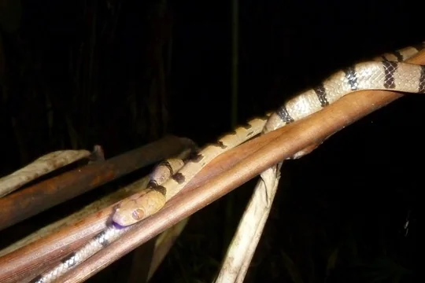
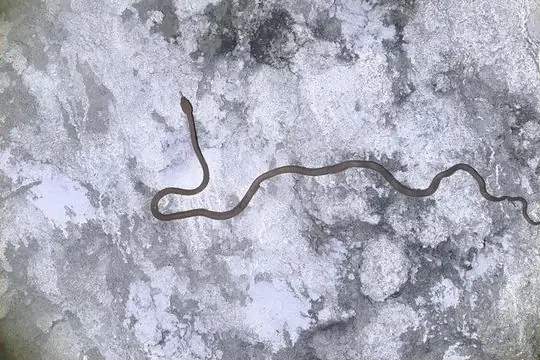
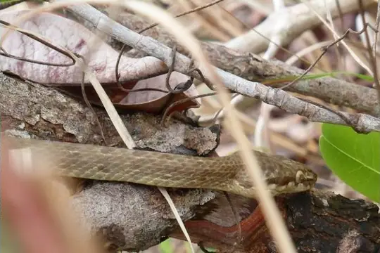

Snakes of Comoros
5 living snake species are recorded in the Comoros in SnakeList: 0 venomous and 5 non-venomous, from 2 families.
- 5living species
- 5non-venomous
- 2families
Danger to people
- 0harmful to people
- 0dangerously venomous
- 0mildly venomous
- 0giant constrictors
- 5harmlesslow risk
Harmful = dangerously venomous + giant constrictors. HarmlessLow risk = not venomous and not a giant constrictor. Mildly venomous snakes have no serious bites to people documented. Any snake can bite.
These totals count the unique living snake species SnakeList records in the Comoros. A species counts if it is recorded anywhere in the country, so not every snake lives in every part of it.
In SnakeList’s checklist filters
How many of the 5 living species here each filter in the SnakeList app picks out.
Snake family1 type, 2 families
Type
- 5Other
Family
- 3Pseudoxyrhophiidae
- 2Typhlopidae
Habitats12 habitat groups
- 2Rainforests
- 2Forests & woodlands
- 1Savannas & grasslands
- 1Shrublands & heath
- 1Deserts & dunes
- 2Underground & forest floor
- 2Coasts & sea
- 1Around people
- 1Madagascar
- 1Africa
- 1North America
- 1Central America & Caribbean
Habitats are estimated from where each snake is recorded and what kind of snake it is, as in SnakeList; a snake can count in several.
Characteristics0 venomous, 0 constrictors
- 0venomous
- 5non-venomous
- 0constrictors
- 2non-constrictors
- 3constriction not documented
- 0snake eaters
Constrictor and Non-constrictor count only snakes whose family or genus is documented as constricting or not; the rest are not documented.
Other filters0 popular, 3 rare
- 0popular
- 5uncommon
- 4exotic
- 1invasive
- 1common
- 3rare
- 1no photos
- 0extinct
- 0harmful
- 5low risk
Species
Showing 5 species
 Brahminy BlindsnakeIndotyphlops braminus
Brahminy BlindsnakeIndotyphlops braminus- No photo yetComoro Worm SnakeMadatyphlops comorensis

Manakara Tree SnakeLycodryas gaimardi
Spotted Tree Snake (cococola)Lycodryas cococola
Spotted Tree Snake (maculatus)Lycodryas maculatus
No snakes in Comoros match.
Comoros’s snakes in numbers
- Families: Pseudoxyrhophiidae 3, Typhlopidae 2.
- 3 are recorded in no other country or territory in SnakeList: Comoro Worm Snake, Spotted Tree Snake (cococola), Spotted Tree Snake (maculatus).
How precisely they are recorded
Of the 5 living species recorded in the Comoros, 2 are recorded by island in SnakeList’s data; 3 are recorded only for the Comoros as a whole, so the island pages list them as possible rather than recorded. SnakeList records each species by island, not by exact spot, so a species listed for a island may live in only part of it.
Islands
The islands where SnakeList records snakes, with how many living species are recorded in each. Each page has its species, venomous snakes, families, the species found only there, its cities and neighbours.
- Andjazîdja 1 species
- Anjouan 1 species
- Mohéli 1 species
No place matches that.
Cities
Its biggest cities, biggest first. SnakeList records snakes by island, not by city, so each city page shows the species recorded in its island and, separately, those only possible there - not species confirmed in the city.
- Moroni Andjazîdja
No place matches that.